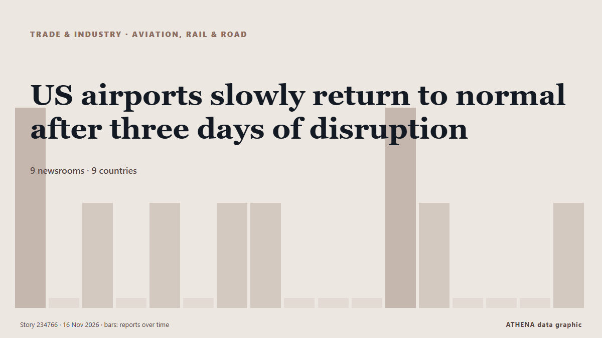

Trade, Industry & Infrastructure
SponsoredPresented by  Cybernetics and Artificial Intelligence Lab Welcome to the Cybernetics and Artificial Intelligence Laboratory, established at the Department of Business Administration of the National and Kapodistrian University of Athens. The lab is headed by Professor Dimitrios Thomakos. The lab aims to do research that can be published in top venues. Our research uses tools and methods of Artificial Intelligence, and lies in the following areas: - Forecasting - Decision making - Cyber security - Finance We are always looking forward to collaborating with exceptional students!
Cybernetics and Artificial Intelligence Lab Welcome to the Cybernetics and Artificial Intelligence Laboratory, established at the Department of Business Administration of the National and Kapodistrian University of Athens. The lab is headed by Professor Dimitrios Thomakos. The lab aims to do research that can be published in top venues. Our research uses tools and methods of Artificial Intelligence, and lies in the following areas: - Forecasting - Decision making - Cyber security - Finance We are always looking forward to collaborating with exceptional students!

Aviation, rail & roadUS airports slowly return to normal after three days of disruption
US air travel was slowly returning to normal on Monday after three days of widespread disruption following an extraordinary no-takeoff order issued by US aviation authorities. from Africanews (English)
| 3 Nov | 91 |
|---|---|
| 4 Nov | 93 |
| 5 Nov | 105 |
| 6 Nov | 75 |
| 7 Nov | 44 |
| 8 Nov | 49 |
| 9 Nov | 117 |
| 10 Nov | 145 |
| 11 Nov | 109 |
| 12 Nov | 95 |
| 13 Nov | 86 |
| 14 Nov | 74 |
| 15 Nov | 61 |
| 16 Nov | 43 |
Another violating tanker catches fire east of Strait of Hormuz: Iran Navy
Tehran, IRNA — Another tanker violating maritime regulations caught fire early Monday after striking a naval mine in a prohibited area east of the Strait of Hormuz, the Iranian Navy says. from IRNA (English)
Ukraine Strikes Crimea-Russia Bridge as Moscow Claims Interception of 1,336 Drones
Attack disrupts traffic on strategic Kerch Bridge as Russia reports one of the largest Ukrainian drone barrages of the nearly five-year war, days before Trump, Putin and Xi meet in China. from Kurdistan24 (English)
Malaysia won’t let US ties limit China engagement, says Anwar in Manila
MANILA, Nov 16 — Malaysia’s relationship with the United States will not prevent it from engaging independen... from Malay Mail
Iran says 2 oil tankers hit mines, catch fire in Strait of Hormuz
IRGC Navy says it mined US-created southern route through strait. from Anadolu Agency (English)
Trump Extends Jones Act Waiver as Oil Transport Pressures Persist
President Donald Trump extended for 90 days a waiver of a shipping law to allow foreign-flagged ships to transport oil and other commodities between US ports, a White House official said on Friday… from Offshore Engineer
China, US discuss tariffs, farm trade ahead of Xi-Trump meeting
$60b package of reciprocal tariff cuts yet to be finalised amid Beijing's push to implement deal. from Express Tribune
CMA CGM triples profit as Q3 freight rates and cargo volumes rise
Shipping drives earnings growth, while logistics margins weaken despite higher revenue. from FreightWaves
UKMTO reports maritime incident near Strait of Hormuz
TEHRAN, Nov. 15 (MNA) – The UK Maritime Trade Operations (UKMTO) has reported that an oil tanker was attacked near the Strait of Hormuz. from Mehr News (English)
War on Iran has cost US taxpayers over $47 billion: Kent
TEHRAN, Nov. 16 (MNA) – Former Director of the National Counterterrorism Center Joe Kent has said that war against Iran has cost US taxpayers over $47 billion. from Mehr News (English)
US air travel disruptions continue into third day
New York: US air travel disruptions continued for a third day with more than 5,200 flights already affected on Sunday, but Transportation Secretary Sean Duffy predicted a return to normalcy by Monday… from Deccan Herald
US airports halt flights for more than four hours after air traffic control system failure
Restrictions have been lifted, but restoring the schedule may take several days. from Asia-Plus (English)
2 violating oil tankers explode in south Hormuz Strait: IRGC
TEHRAN, Nov. 15 (MNA) – The Public Relations Office of the IRGC Navy Force has announced that two oil tankers caught fire and exploded in southern Strait of Hormuz. from Mehr News (English)
US air travel disruptions to persist until late on Sunday: FAA head
The FAA issued a nationwide ground stop on Friday that halted nearly all departing flights. from SABC News
2 planes collide on the ground in Miami, only minor injuries reported
The accident involved a Copa Airlines Boeing 737 aircraft with 172 people aboard and a UPS Boeing 767 cargo plane. from Courthouse News
ATI Secures Manila South Harbour Concession Renewal To 2063
Renewal provides long-term certainty for ATI to advance investment in port modernisation, innovation and sustainable infrastructure MANILA, PHILIPPINES – Media OutReach Newswire – 12 November 2026… from Laotian Times
Dubai ranks 12th among world’s leading maritime cities as Abu Dhabi climbs to 15th
Dubai ranks 12th globally and Abu Dhabi rises to 15th in the 2026 Leading Maritime Cities report, with Dubai also fifth worldwide for maritime resilience. from Arabian Business
Tanker steering problem caused New Orleans ship collision
The asphalt tanker vessel that struck a docked cruise boat in the Mississippi River at New Orleans last week experienced a steering problem in which its rudder was stuck in one position, US… from RTÉ News
US blames system upgrade for longest nationwide FAA ground stop since 9/11
Sean Duffy, the country's transportation secretary, said his agency is 'going to hold people accountable'. from Al Jazeera English
3,000+ flights canceled after FAA's ground stop
U.S. air traffic is slowly returning to normal after a nationwide ground stop Friday halted flights and left thousands canceled and delayed. from The Hill
Trump breaks silence on FAA's nationwide ground stop, demands more money for air traffic control
Duffy said officials were investigating whether contractor ‘incompetence’ or a faulty router was the cause of the meltdown. from The Independent
Trump blames Biden for US flight disruptions
Trump, in first comments on air travel halt, blames Biden. from Gulf News
US flight suspension linked to copper wire upgrade, transport secretary says
US Transportation Secretary Sean Duffy says the disruption appears to have originated during maintenance work on ageing copper cables, with no indication of a foreign cyberattack, as thousands of… from ProtoThema English
US flight disruption: Flightradar24 compares skies before and after FAA nationwide ground stop
A nationwide ground stop imposed by the US Federal Aviation Administration (FAA) on Friday brought air traffic across the United States to a halt, disrupting thousands of flights and leaving hundreds… from Gulf News
Trump official seeks $50 billion for air traffic control after outage
Transportation secretary Sean Duffy, White House ask for $30.1b to upgrade aging airports, air traffic control system. from Express Tribune
US aviation shutdown blamed on L3 Harris installed router
WASHINGTON, Nov 14 - A massive, nearly five-hour shutdown of the US aviation system that has disrupted more than 20,000 flights since Friday may have been the fault of a single router installed by… from The Straits Times
Oil tanker on fire after hitting mine in Strait of Hormuz
Tankers in recent weeks have attempted to navigate what were described as unauthorised routes in the waterway. from The Independent
2 oil supertankers catch fire after explosions in Strait of Hormuz: Iran
Why is Iran attacking tankers during peace talks? from Gulf News
US flight chaos caused by repair of old copper wiring: Trump admin
Weary travellers endured more flight disruptions as service resumed at US airports after an hours-long total stoppage, with officials saying the situation should return to normal on Sunday. from Dawn
Canada’s Carney touts Philippine trade deal on Asia tour
Canadian Prime Minister Mark Carney announced a new trade agreement with the Philippines, aiming to lessen reliance on the United States amid trade tensions. from Arab News
US flights resume after rare hours-long nationwide grounding but cancellations, delays persist
Weary travellers braced for more delays and cancellations on Saturday as flights resumed from US airports after being grounded for four hours due to a major outage on outdated communications systems. from Dawn
US Briefly Grounds All Departing Flights, 2nd Such Move Since 9/11
The nationwide ground stop was the first since January 2023, when a key FAA computer system malfunctioned, and the second since the aftermath of the September 11, 2001, attacks. from NDTV
Possible disruption expected for UK travellers after flights grounded across US
The US Federal Aviation Administration halted all flights across America for several hours on Friday. from Evening Standard (London)
US lifts ground stop, but passengers face second day of flight disruption
More than 1.5 million passengers face travel disruption as domestic and international airlines warn of knock-on delays. from Al Jazeera English
US to resume flights after air traffic network failure sparks chaos
US Transportation Secretary Sean Duffy said US airspace reopened at 8.15pm eastern time, but warned that flights would resume gradually and normal operations would take time to restore. from Free Malaysia Today